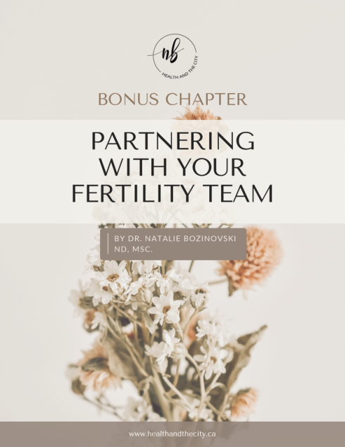

Understanding the diagnosis
Ask how the stage and type of endometriosis influence recommendations, fertility and ovarian reserve.
A practical bonus chapter included with Navigating IVF with Endometriosis, for asking clearer questions and taking an active, informed role in fertility care.

Dr. Natalie’s bonus chapter organizes useful prompts around the moments when treatment decisions can feel most complex.
Ask how the stage and type of endometriosis influence recommendations, fertility and ovarian reserve.
Clarify medication choices, stimulation protocols, embryo banking and freeze-all considerations.
Discuss suppression, transfer timing, success-rate comparisons and what a previous unsuccessful cycle may teach the team.
Ask what evidence supports each recommendation and whether it interacts with medications or clinic protocols.
Choose the prompts that fit your situation rather than treating the chapter as a script. The goal is a shared conversation where recommendations are explained in the context of your history and treatment plan.
This educational resource does not diagnose a condition, predict an individual outcome or replace advice from your fertility or medical team.
This product is not currently available for purchase.
Explore the ShopUse the chapter to prepare questions, then bring your clinic plan and concerns to a personalized consultation.
Book a consultation